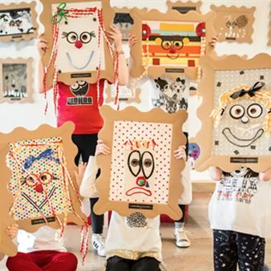

da sab 17 ott a dom 14 feb · dalle 16:00
Laboratorio per bambini "Animali da palcoscenico"
Con i Laboratori di piccola scenografia teatrale il Giovanni da Udine invita le bambine e i bambini a realizzare coloratissime creazioni di cartone, stoffe, materiali di riciclo, ispirate al lessico e ai simboli della macchina teatrale. A cura di Margherita Mattotti ed Eloisa…
 Indicazioni
Indicazioni
- Costi e prenotazioni
- Costo non indicato · Prenotazione non indicata
- Programma
- Programma da verificare. Apri la fonte ufficiale per orari e possibili aggiornamenti.
- In caso di maltempo
- Nessuna indicazione specifica pubblicata.
- Note
- Acquisito automaticamente dalla fonte.
L’EVENTO
Descrizione completa
Con i Laboratori di piccola scenografia teatrale il Giovanni da Udine invita le bambine e i bambini a realizzare coloratissime creazioni di cartone, stoffe, materiali di riciclo, ispirate al lessico e ai simboli della macchina teatrale.
A cura di Margherita Mattotti ed Eloisa Gozzi sabato 17 ottobre 2026 – ore 16.00
domenica 18 ottobre 2026 – ore 16.00
in contemporanea alla recita pomeridiana dello spettacolo Amélie – Il Musical domenica 25 ottobre 2026 – ore 16.00
in contemporanea alla recita pomeridiana dello spettacolo Prima del Temporale domenica 22 novembre 2026 – ore 16.00
in contemporanea alla recita pomeridiana dello spettacolo Erano tutti miei figli domenica 31 gennaio 2027 – ore 16.00
in contemporanea alla recita pomeridiana dello spettacolo Marco Polo e le città invisibili domenica 14 febbraio 2027 – ore 16.00
in contemporanea alla recita pomeridiana dello spettacolo Frida Opera Musical
Nei laboratori sarà riproposto un unico tema creativo, con varianti nei materiali a disposizione. È consigliato iscrivere ciascun bambino ad un solo laboratorio.
I laboratori sono indirizzati a bambini da 4 a 11 anni
È possibile iscrivere ciascun bambino ad un massimo di due laboratori.
Iscrizione obbligatoria all’indirizzo iscrizioni@teatroudine.it
indicando nome, cognome ed età del bambino di cui si chiede l’iscrizione e nome, cognome, indirizzo mail e cellulare di un genitore.
Prezzo di ingresso a tutti i laboratori: € 8,00
Ingresso gratuito ai laboratori ANIMALI DA PALCOSCENICO per i bambini accompagnati da possessori di biglietti o abbonamenti per gli spettacoli Amélie – Il Musical, Prima del Temporale, Erano tutti miei figli, Marco Polo e le città invisibili, Frida Opera Musical. Per questi bambini le attività termineranno alla fine degli spettacoli. Le iscrizioni potranno essere considerate confermate soltanto dopo aver ricevuto una mail di risposta dagli uffici del Teatro.
IL PROGRAMMA
Programma e orari
Appuntamenti raccolti dalle fonti elencate. Dove manca un orario, non è ancora disponibile in questa scheda.
Programma pubblicato
- Dal 2026-10-17 al 2027-02-14
INFORMAZIONI UTILI
Prima di partire
- Controllare la fonte prima di partire.
ORGANIZZAZIONE